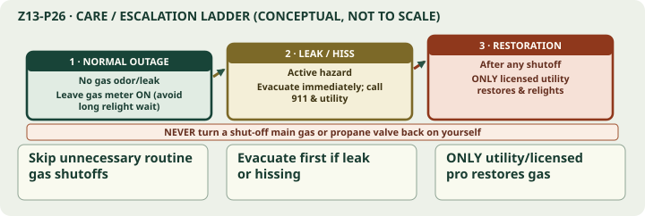

Z13-P26 · Home survival and utilities · New manuscript
Respect natural-gas and propane shutoff boundaries and utility restoration rules
Clarify when gas valves should be left alone versus closed externally and why homeowners NEVER turn gas service back on themselves.
When it applies · Post-storm, earthquake, flood, or appliance-leak utility decisions in gas-heated homes.
Equipment · Appropriate wrench stored outside ONLY if local utility instructs homeowner emergency shutoff, plus utility emergency phone list.

Actions
- Do NOT shut off your main home gas meter casually "just in case" during a routine electrical outage—unnecessary shutoffs leave homes unheated for days waiting for utility technicians to pressure-test lines and relight every pilot safely.[U11, U14]
- If you smell leaking gas, hear hissing, or see structural/flood damage to gas piping and you can safely reach an exterior valve outside the building without entering gas fumes, follow your local gas utility's exact shutoff instructions (or evacuate first and let utility/fire crews shut it off).[U11]
- Once a main natural-gas or propane tank valve has been turned off, NEVER turn it back on yourself—only the gas utility or a licensed gas technician may inspect appliances, purge air safely, and restore service.[U11]
Failure recognition · Turning the main gas meter back on yourself after a flood without pressure-testing, filling a basement with unburned gas from an extinguished pilot.[U11]
Verify · Confirm household knows NEVER to restore shut-off gas service independently and keeps utility emergency numbers on paper.[U11, U14]
Stop or change course · Any doubt about gas piping integrity, flood-submerged gas appliances, or odor requires evacuating and waiting strictly for utility/licensed technicians.[U11]
Evidence and editorial notes
- U11 · FEMA / Ready.gov · Hazardous Materials Incidents (current web edition)
- Section: Natural Gas Leaks, Fuel Odors, and Utility Shutoff Boundaries · Conditions: Suspected household natural gas, propane, or fuel-oil leak
Support: If you smell rotten eggs/mercaptan or hear hissing near gas lines, leave the building immediately without toggling light switches or using phones inside, and call 911 and the gas utility from outside; never turn gas back on yourself.
Limitations: Only the gas utility or licensed technician may restore shut-off gas service and relight pilot systems safely. · Conflicting evidence: None; critical residential utility stop condition.
Editorial note: Establishes strict utility-leak evacuation and licensed restoration gates. · Specialist reviewer: Gas utility safety and fire service
Primary source · checked 2026-11-24 - U14 · FEMA / Ready.gov · Make a Plan (current web edition)
- Section: Household Emergency Planning, Utility Maps, and Outage Checklists · Conditions: Pre-outage residential documentation and household drills
Support: Document main water, electrical panel, and gas shutoff locations, utility outage phone numbers, medical power registries, and neighborhood check-in networks on paper before storms hit.
Limitations: Utility medical-priority lists do not guarantee uninterrupted power during major ice storms or grid blackouts. · Conflicting evidence: None; bridges Z01 planning with Z13 household infrastructure.
Editorial note: Grounds household utility mapping and vulnerable-occupant contingencies. · Specialist reviewer: Emergency management and accessibility specialist
Primary source · checked 2026-11-24
Source lineage · FEMA Ready.gov and NFPA Heating Safety; new manuscript · Classification · New manuscript.